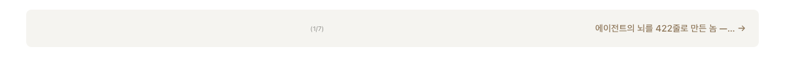
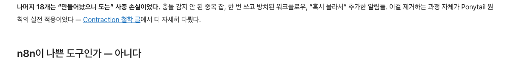
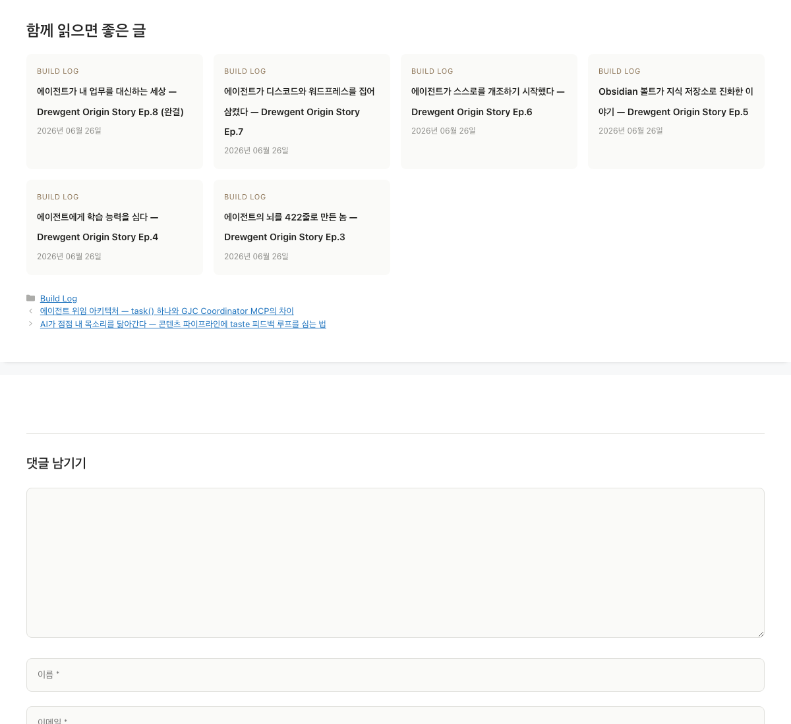

Series navigation · Related posts · In-content links. Pure PHP, no external APIs.
A reader finds your post. Reads it. Closes the tab. Sound familiar?
of first-time visitors never return to a typical WordPress site. Your content is good — but your site has no mechanism to keep readers moving.
Most plugins solve one piece — related posts OR series nav OR in-content links. You need all three, working together, with zero setup.
Bloated suites (Jetpack, etc.) bundle 50+ modules you don't need. Single-feature plugins leave gaps. Content Quicksand plugs all three holes at once.
All three retention layers activate automatically on every new post. For existing content, use the admin dashboard or WP-CLI to generate links in bulk.

Ep.1, Part 2, 에피소드 3 patterns.

Free. GPLv2. No account required.